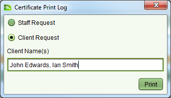

Print a Certified Copy
This service is used to indicate a certified true copy of a title has been requested. The
request may be received from an agent or a member of the public seeking to obtain information
about a particular property. It requires printing and certifying (i.e. stamping) the Computer
Folio Certificate for the named property.
Lodge an Application
Steps
-
-
From the Dashboard select the
 New
application tool to open the Application Details screen.
New
application tool to open the Application Details screen.
-
On the General tab, select the appropriate agent from the Agent dropdown. If the person
making the request is not listed in the drop down list, choose the Other Agent option
at the top of the list and enter the contact details for the person in the fields
provided.
-
On the Services tab, add the Produce/Print a Certified Copy service to the application.
-
On the Property tab, enter the folio references for the property or properties that
have been requested. You can quickly check if SOLA records information about a property
using theVerify tool. If the Titles
Exist flag remains unchecked, it means SOLA does not contain a record for the property
and will not be possible to produce a Computer Folio Certificate.
-
No supporting documents are required for this service, so there is no need to enter any
documents on the Documents tab.
-
No Map points are required.
-
Click the
 Save button. This will lodge
the application and produce the lodgment notice. Print the notice and give it to the
person as proof the application has been lodged. The lodgment notice will indicate the
fee to be paid for the application.
Save button. This will lodge
the application and produce the lodgment notice. Print the notice and give it to the
person as proof the application has been lodged. The lodgment notice will indicate the
fee to be paid for the application.
Fee Payment
Once the lodgment notice is printed, the person will need to take the notice to the cashier
in the finance section and arrange payment. When payment has been made, the cashier will
locate the Unassigned application list on the SOLA Dashboard, Open the
application and check the Fee Paid flag on the Fees tab to indicate the application can
continue processing.
Open the
application and check the Fee Paid flag on the Fees tab to indicate the application can
continue processing.
Assign the Application
Steps
-
-
From the SOLA Dashboard, check the Unassigned applications list to confirm the fee for
the application has been paid. If the fee has not been paid it will not be possible to
assign the application. In this situation notify the person noted as the contact and/or
cashier to confirm the payment status for the application.
-
If the application fee has been paid, select the application in the Unassigned
applications list and click the
 Assign
tool. This will open the Application Assignment screen.
Assign
tool. This will open the Application Assignment screen.
-
Click the Assign button to assign the application. When the Assign action is complete,
you will be returned to the Dashboard and the assigned application will appear in your
Assigned applications list.
Print the Computer Folio Certificate
Steps
-
-
From the SOLA Dashboard, open the
 Property search, enter the property details and search for
the property.
Property search, enter the property details and search for
the property.
-
Select the property from the search results andOpen the Property Details screen.
-
From the Print Option dropdown, select
 Computer Folio Certificate
Computer Folio Certificate
-
At the Certificate Print Log dialog, click the Client Request radio button and enter
the name(s) of the client.

Certificate Print Log dialog
-
-
Click the Print button to generate the certificate.
-
Stamp the certificate with the Registar of Lands seal and pass (or deliver / post) the
stamped report to the person noted by the application.
Complete the Service and Application
Once the certificate has been printed, the service needs to be completed and the application
archived.
Steps
-
-
From the Dashboard,Open
the application with the Certified Copy service from your Assigned applications list.
-
On the Services tab, select theProduce/Print a Certified Copy service and click the
 Complete tool. This will run the SOLA
business rules to validate the application data. If there is a critical failure, you
must remedy the failure as it will not be possible to approve the application
otherwise.
Complete tool. This will run the SOLA
business rules to validate the application data. If there is a critical failure, you
must remedy the failure as it will not be possible to approve the application
otherwise.
-
Use the
 Approve action in the
Application action dropdown to approve the application.
Approve action in the
Application action dropdown to approve the application.
-
Use the
 Archive action to complete the
Application.
Archive action to complete the
Application.